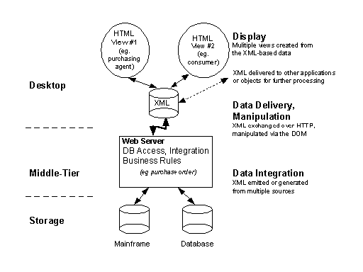
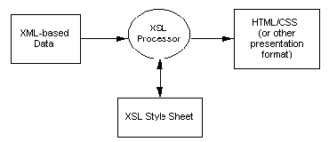

| ||||||
The XML language, XML namespaces, and the DOM are W3C recommendations, the final stage in the W3C development and approval process. Because of these fully stable specifications, developers can start tagging and exchanging their data in the XML format. XML offers a robust solution as the underlying architecture for data in three-tier architectures.
XML can be generated from existing databases using a scalable three-tier model. With XML, structured data is maintained separately from the business rules and the display. Data integration, delivery, manipulation, and display are the steps in the underlying process as summarized in the following diagram.

XML namespaces let developers qualify element names in a recognizable manner to avoid conflicts between elements with the same name. Elements referenced in one document, such as a purchase order, can be defined in different schemas on the Web. Namespaces ensure that element names do not conflict and clarify their origins, but do not determine how to process elements. Parsers must know what elements mean and how to process them.
Tags from multiple namespaces can be mixed, which is essential with data coming from multiple sources across the Web. With namespaces, both elements could exist in the same XML-based document instance but could refer back to two different schemas, uniquely qualifying their semantics. For instance, in a bookstore purchase order, one "title" element could contain a book title, and another "title" element could contain the author's title.
The W3C has released XML namespaces as a recommendation, allowing elements to be subordinate to a URI. This ensures that names remain unambiguous even if chosen by multiple authors. Just as anyone can publish their own Web page or view those of others, the namespace facility allows users to define private dictionaries of terms, or use a public namespace of common terms.
<orders xmlns:person="http://www.schemas.org/people"
xmlns:dsig="http://dsig.org">
<order>
<sold-to>
<person:name>
<person:last-name>Layman</person:last-name>
<person:first-name>Andrew</person:first-name>
</person:name>
</sold-to>
<sold-on>1997-03-17</sold-on>
<dsig:digital-signature>1234567890</dsig:digital-signature>
</order>
</orders>
This code tells any reader that if a name begins with "dsig:" its meaning is defined by whoever owns the "http://www.dsig.org" namespace. Similarly, elements beginning with the "person:" prefix have meanings defined by the "http://www.schemas.org/people" namespace.
Namespaces ensure that element names do not conflict, and clarify who defined which term. They do not give instructions on how to process the elements. Readers still need to know what the elements mean and decide how to process them. Namespaces simply keep the names straight.
An author can specify an element's data type (it's a number, a date, and so on) and the format of the string's contents. One can use the dt attribute from the data types namespace at "urn:schemas-microsoft-com:datatypes" for this purpose.
<sold-on dt:dt="date"
xmlns:dt="urn:schemas-microsoft-com:datatypes">1997-03-17</sold-on>
Here, "date" specifies that the "sold-on" element's contents are a date in the standard format specified by the data types namespace. As with element names, authors will eventually be able to design their own data types, and also use types shared publicly. Microsoft is working with the W3C to define a set of standard types, and has provided an initial list as part of XML Schema support in Internet Explorer 5.
Because XML is an open, text-based format, it can be delivered through HTTP in the same way HTML can today. Data now on the desktop can be manipulated using the DOM. Agents will also support the ability to generate XML updates, which can be sent in both directions to inform clients of changes made to data on the middle tier or database server and vice versa. Consequently, the agents will be able to receive updates from the client and send them to a storage server.
The XML parser in Internet Explorer 5 can read a string of XML data, process it, generate a structured tree, and expose all data elements as objects using the DOM. The parser displays this data using a CSS or XSL style sheet, or makes the data available for further manipulation by script or hands it off to other applications or objects for further processing. Namespaces, data types, queries, and XSL transformations are supported with extended methods available in the DOM.
The DOM is essentially an Application Program Interface (API) that defines a standard way in which developers can interact with the elements of the XML structured tree. The object model controls how users communicate with trees and exposes all tree elements as objects, which can be accessed programmatically without any return trips to the server.
An XML document does not by itself specify whether or how its information should be displayed. The XML data merely contains the facts (such as who ordered which books at which prices). HTML is an ideal display language for presenting this data to an end user. For example, an employee of an online bookstore can visit a Web page to find a list of order entries. On the back end, the individual data records are expressed in XML. However, on the front end, they are presented to the employee as an HTML page. To construct this Web page, either the Web server or the Web browser will need to convert the XML data records into an HTML presentation, such as a table.
The mechanisms of data binding and style sheets can be used to arrange XML data into a visual presentation, and to add interactivity. Data binding is an aspect of Dynamic HTML (DHTML) that moves individual items of data from an information source (such as an XML document) into an HTML display, allowing HTML to be used as a template for displaying XML data. This is similar to a "mail merge" in word processing. Microsoft currently ships an XML Data Source Object (XML DSO) as part of Internet Explorer 5. The XML DSO can be invoked declaratively upon XML data islands.
XSL (Extensible Stylesheet Language) can add even greater power to this process. An XSL style sheet contains instructions for how to pull information out of an XML document and transform it into another format, such as HTML. The transformation of XML into formats, such as HTML, is done in a declarative way, making it often easier and more accessible than through scripting. In addition, XSL uses XML as its syntax, freeing XML authors from having to learn another markup language.
CSS can still be used for simply structured XML data—and in such situations, it will be useful. However, CSS does not provide a display structure that deviates from the structure of the data source. With XSL, it is possible to generate presentation structures (in HTML for instance) that are very different from the original XML data structures, as shown here.

XSL provides both semantic and structural independence of content and presentation.
Adding semantic information to HTML pages is not easy. Historically, various programs have attempted to deal with this problem by using nonstandard "tricks," such as hiding data inside HTML comments. However, these comments are awkward and, unlike XML, are not exposed to the object model.
To solve this, the W3C has defined a format for putting XML-based data (data islands) inside HTML pages. Extending HTML through the use of data islands will allow a wide range of applications to use HTML as the primary document or display format and also use XML embedded within these documents to hold data.
An HTML page could therefore include, among other things, specific data about the subject of the page. For instance, if the page displayed an advertisement for an author's most recent novel, the page could also contain XML data concerning that book, such as its ISBN number, publisher, or suggested retail price. It is not important that this information be displayed, but it is important that this information be accessible and understandable as data.
With the advent of XML as a standard way to interchange data on the Web, inevitably the need arises for mechanisms to query XML, shaping extracted data, including sorting and filtering, and transforming one XML grammar into another. XSL and the XSL Pattern language that is part of XSL provide a measure of this capability today.
XSL Patterns are a simple and concise syntax for identifying nodes in an XML document, based on the node's type, name, content, and context in relation to other nodes in the tree.
XSL provides a grammar in which the results of XSL Pattern queries are associated with templates to describe the materialization of data in the XML source document as a new XML document. While this forms the basis for transforming data to display formats such as HTML, any XML grammar can be output, providing for sorting and filtering within a single XML grammar, or translating data from one schema to another.
Work on a more powerful query language for XML is being considered by the W3C, but no working group has yet been formed.
All information in XML is Unicode text. This includes the contents of elements and element names themselves. As a result, XML supports representation of all international character sets.
Unicode can be transmitted directly as 16-bit characters, but more commonly is transferred using encoding that is more convenient or compact for certain languages. XML supports a range of encodings (the default is UTF-8), subject only to the restriction that an entire document must share the same one.
Unlike HTML, which, in most cases, ignores white space (spaces, tabs, new lines, and so on), XML is for data, and thus has the capability through the reserved xml:space attribute to retain all white space. For example, the following are not equivalent:
<title xml:space="preserve"><composer>Tchaikovsky</composer>'s
First Piano Concerto</title>
<title xml:space="preserve">
<composer>Tchaikovsky</composer>'s
First
Piano Concerto
</title>
The value xml:space="default" provides some trimming of white space nodes between tags in Internet Explorer 5.
Did you find this topic useful? Suggestions for other topics? Write us!
© 1999 Microsoft Corporation. All rights reserved. Terms of use.